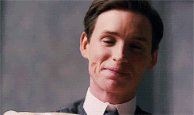
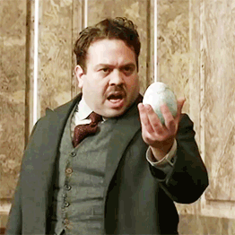
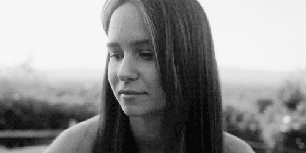
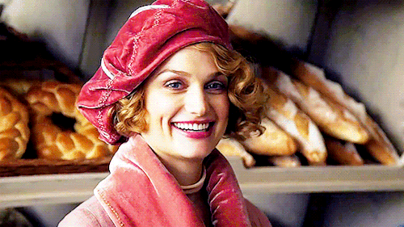

This spin-off of the Harry Potter franchise jumps back in time to explore the wizarding world of 1926 New York, which is being threatened by both mystical acts of destruction and a group of extremist No-Majs (the American term for Muggles, i.e. those unable to use magic). Author Newt Scamander (Eddie Redmayne) arrives in the city as part of a global study of fantastic beasts, but he gets caught up in this conflict when some of the magical creatures in his care are accidentally released.
Eddie Redmayne
Dan Fogler
Katherine Waterston
Alison Sudol
